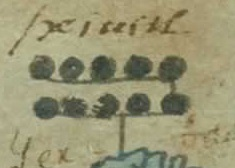
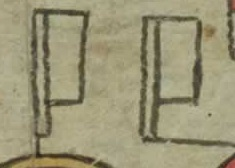
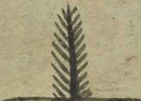
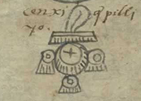

Codex
How to Read
The first two pages of the Matrícula—folios 1r and 1v, in addition to being damaged, difficult to interpret. They do not follow the visual layout found in the rest of the document. They are subdivided by red lines, and they contain a number of glyphs showing human faces. What survives of folio 1r depicts two pairs of places—Oztoma and Poctepec below, Çoçolan and Huaxacac above—as well as glyphs for human heads representing the governors of these locations. The bottom of folio 1v depicts an additional pair of places (Atlan and Teçapotitlan), and at the top of the page are painted two more, single places (Atzacan and Soconusco with their governors). Significantly, most of these locations (Oztoma and Poctepec, Zozolan and Huaxacac, Atlan and Teçapotitlan, Xoconochco) were located on the outer fringes of the Aztec empire. Atzacan was sandwiched between two kingdoms (Tlaxcala and Teotitlan) that had maintained their independence from the Aztec. In other words, the places depicted on the initial folios of the Matrícula probably represented different kinds of frontier outposts. All these locales were in relatively distant reaches of the empire, they represent the cities where the Triple Alliance are stationed in the conquered area. Similar content is available in Codex Mendoza. Its record is more complete, with a total of 11 garrison altepetls.
Altepetl
hieroglyph
hieroglyph
Altepetl
hieroglyph
hieroglyph
Altepetl
hieroglyph
hieroglyph
Altepetl
hieroglyph
hieroglyph
Governors
Governors
Governors
Starting from the third page, the codex illustrate a list of the towns conquered by the Triple Alliance and the tributes paid by each. Folio 2r—what survives of it—shows the signs of Tenochtitlan (left) and Tlatelolco (right), the two cities which shared the island at the center of Lake Texcoco. Between these cities are shown four fifteenth-century rulers, two from Tenochtitlan and two from Tlatelolco. They are presented in pairs: an Aztec ruler who conquered Tlatelolco is joined with a defeated Tlatelolcan ruler. The first conquest of Tlatelolco (by the Aztec ruler Itzcoatl) seems to have left the Tlatelolcan tlatoani (ruler) in power. The second conquest (by the Aztec ruler Axayacatl) was permanent: no tlatoani was permitted to rule Tlatelolco again. The top of the page shows the tribute that Tlatelolco had to offer to Tenochtitlan.
Finally, starting with folio 2v, the images of the Matrícula follow a standard layout. Each page is dedicated to a tribute province—with the exception of 8r, which depicts two provinces (Malinalco / Xocotitlan), and 10v, which depicts three (Tlalcoçauhtitlan / Quiauhteopan / Yoaltepec). The reading of each page begins in the lower left-hand corner. A series of place signs runs left to right along the lower edge of each page and, if necessary, continues upwards along the right-hand edge.
Tribute items
Altepetl hieroglyphs
The first place shown (so, the town depicted in the lower left-hand corner) is the main town of each tribute province, and gives each tribute province its name. The majority of the space on each page is then filled with images of the tribute items that the listed towns were expected to send to Tenochtitlan, probably every 80 days. Many of the visually-depicted objects (bowls of gold dust, jars of honey, jaguar skins) are marked with numeric signs. These indicate how many such objects were demanded. A white paper flag stood for 20, a black and white feather for 400, and a white pouch for 8000. The reading order of these tribute items across each folio is not clear. For our presentation here we have decided to read them along a snaking back-and-forth route: left to right, then right to left, then left to right again. This was a reading order well known to prehispanic Mesoamericans—and also to the ancient Greeks, who called it boustrophedon, “as the ox plows.”
Ancient Mesoamericans used the 20-based mathematical system. In the Nahuatl writing system, scribes use glyphs to represent numbers. They appear on the tribute page in the manuscript to indicate the amount of tribute required. The glyphs for numbers appearing in the manuscripts are listed below.
|  |  |  |  |
|---|---|---|---|
| Numbers within 20 indicate the method. Each black dot represents the number 1. | The glyph of the flag. One flag represents the number 20. | Feather(or hair) glyph. One feather represents the number 400. | Incense bag or pouch. One incense bag represents the number 8000. |
Page Contents

Imperial Outposts
PAGE 01
FOLIO 1R

Imperial Outposts
PAGE 02
FOLIO 1V

Tribute of
Tlatelolco
PAGE 03
FOLIO 2R

Tribute of
Petlacalco
PAGE 04
FOLIO 2V

Tribute of
Acolhuacan
PAGE 05
FOLIO 3R

Tribute of
Quauhnahuac
PAGE 06
FOLIO 3V

Tribute of
Huaxtepec
PAGE 07
FOLIO 4R

Tribute of
Quauhtitlan
PAGE 08
FOLIO 4V

Tribute of
Hueypuchtlan
PAGE 09
FOLIO 5R

Tribute of
Atotonilco
PAGE 10
FOLIO 5V

Tribute of
Xilotepec
PAGE 11
FOLIO 6R

Tribute of
Quahuacan
PAGE 12
FOLIO 6V

Tribute of
Tulucan
PAGE 13
FOLIO 7R

Tribute of
Ocuilan
PAGE 14
FOLIO 7V


Tribute of
Malinalco
Tribute of
Xocotitlan
PAGE 15
FOLIO 8R

Tribute of
Tlachco
PAGE 16
FOLIO 8V

Tribute of
Tepequacuilco
PAGE 17
FOLIO 9R

Tribute of
Cihuatlan
PAGE 18
FOLIO 9V

Tribute of
Tlapan
PAGE 19
FOLIO 10R


Tribute of
Tlacozauhtitlan
Tribute of
Quiauhteopan
Tribute of
Yoaltepec
PAGE 20
FOLIO 10V

Tribute of
Chalco
PAGE 21
FOLIO 11R

Tribute of
Tepeyacac
PAGE 22
FOLIO 11V

Tribute of
Coixtlahuacan
PAGE 23
FOLIO 12R

Tribute of
Coyolapan
PAGE 24
FOLIO 12V

Tribute of
Xoconochco
PAGE 25
FOLIO 13R

Tribute of
Quauhtochco
PAGE 26
FOLIO 13V

Tribute of
Cuetlaxtlan
PAGE 27
FOLIO 14R

Tribute of
Tlapacoyan
PAGE 28
FOLIO 14V

Tribute of
Tlatlauhquitepec
PAGE 29
FOLIO 15R

Tribute of
Tochpan
PAGE 30
FOLIO 15V

Tribute of
Atlan
PAGE 31
FOLIO 16R

Tribute of